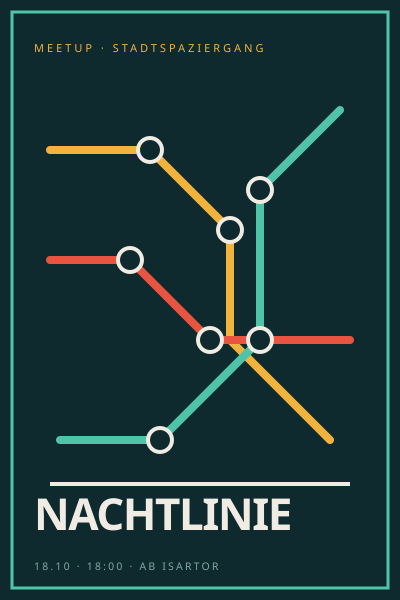
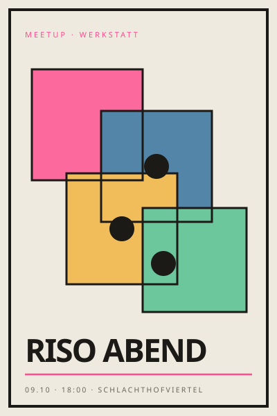
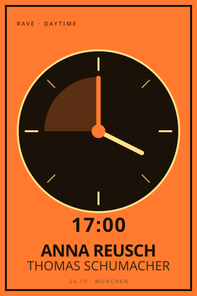
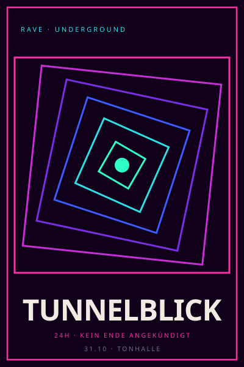

Hepsi aynı kişiyi gösteriyor, aynı renkler ve fontlarla (Inter Tight, JetBrains Mono, Archivo). Her telefonun içi kaydırılabiliyor. Altındaki not, tasarımın veritabanında henüz olmayan neye ihtiyaç duyduğunu söylüyor.
önce techno, dörtten sonra house. pazar sabahları blitz'te.


önce techno, dörtten sonra house.
pazar sabahları blitz'te. plak topluyorum, çoğunlukla 90'lar detroit.
önce techno, dörtten sonra house. pazar sabahları blitz'te.
önce techno, dörtten sonra house.


önce techno, dörtten sonra house.pazar sabahları blitz'te. plak topluyorum, çoğunlukla 90'lar detroit.
ortak: ece, mert ve 1 kişi daha
başka yerlerde: instagram · soundcloud · spotify